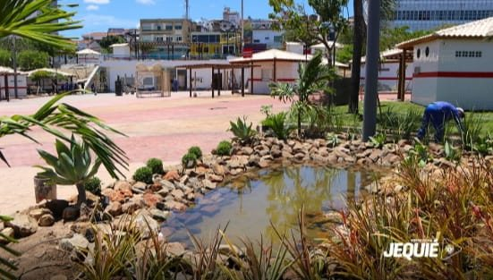
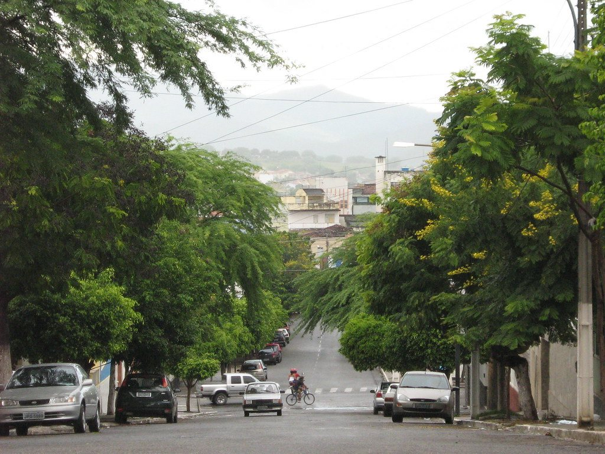
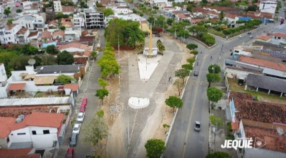
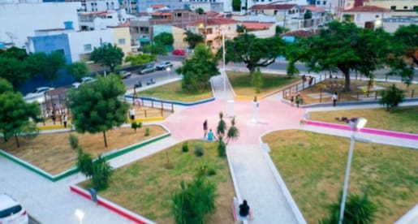

Projeto escolar · Jequié – BA
Raízes do Clima
A importância da arborização nas praças da nossa cidade para um futuro saudável, sustentável e agradável para todos.

5,4 °Cde diferença nas nossas medições entre a área sem árvores e a arborizada
3 praçasapresentadas neste projeto
Arduinotermômetro montado por nós para medir a temperatura
Sobre nós
Somos estudantes do 3º C — Curso Técnico em Informática. Olhando para Jequié, percebemos o quanto as árvores e as praças fazem diferença no nosso dia a dia. Foi assim que nasceu este projeto: queremos valorizar a arborização, mostrar seus benefícios, apontar problemas e apresentar soluções para deixar nossa cidade mais verde, fresca e bonita para todos.
🌳
Mais sombra
Torna os espaços públicos mais agradáveis.
🌡️
Menos calor
Ajuda a reduzir a temperatura da cidade.
🍃
Melhor qualidade do ar
Filtra poluentes e aumenta a umidade do ambiente.
💚
Mais bem-estar
Proporciona lazer, conforto e saúde para a população.

Medimos o calor de verdade
Montamos um termômetro com Arduino e display LCD e levamos até dois lugares diferentes da cidade: uma área arborizada e uma praça sem cobertura vegetal.
O resultado mostra, em números, o quanto a sombra das árvores muda a temperatura que sentimos.
Ver os resultados →Nossas Praças
Conheça algumas das principais praças da nossa cidade e veja como a arborização faz a diferença em cada uma delas.

